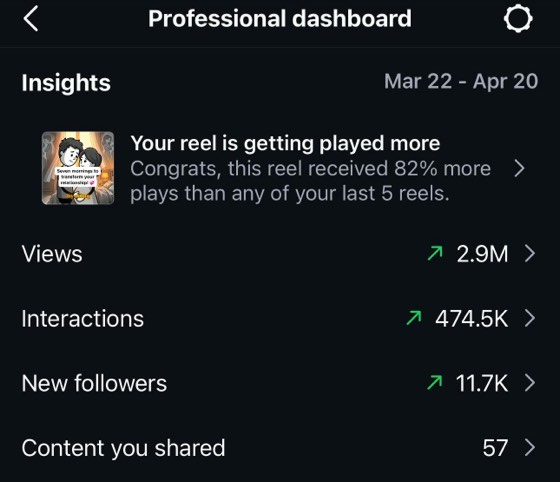
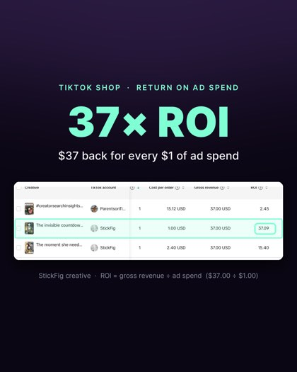

Upload the book once. Sonder writes the script from your actual pages, voices it, edits it, and hands you up to 30 videos a month — for less than a freelancer charges for one.
No card. About four minutes. You keep the video either way.
We use this to send your video and set up your account. No spam, and you can unsubscribe any time.
Have you got a book?
Next you’ll upload the manuscript and your cover image — that’s the whole setup.
Upload my bookEvery video is built from the words in your finished manuscript. Without one there’s nothing for it to read. Finish the book and we’ll be here.
Set up my account anywayYou’ve almost certainly already tried some of these:
Sonder isn’t a cheaper version of any of those. It’s a different thing entirely: a studio that has read your book and turns the parts readers actually stop for into video. You never film. You never edit. You never appear.
They kept seeing the same thing: genuinely good books, invisible. Not because the writing was weak — because one author cannot personally make thirty videos a month. Everything they knew about what actually works on camera went into Sonder, so that an author doesn’t have to learn any of it.


“I’d posted for months and got crickets. One Sonder video did more in a week than my year of trying.”
“I started 5 days ago and made 10 sales.”
No filming. No editing. No script to write. No appearing on camera. If you can upload a file, you can do this.
And you don’t decide any of that today — your first video is free, and we don’t ask for a card to make it.
Minutes. Upload the book once, then each new video is a couple of clicks and a short render.
Memoir, self-help, business, health, history, children’s, fiction. If it has a story or an idea in it, it has videos in it.
None. There is nothing to edit. You pick a style and Sonder does the rest.
Yes. First video free, no card. That is the whole point of this page.
You do. Commercially, forever.
TikTok, Instagram Reels and YouTube Shorts, automatically if you want. Or just download them.
No card. About four minutes. You keep it either way.
P.S. — If you skipped to the bottom, here it is in one line: upload the book you’ve already written, and in about four minutes you’ll watch a video made out of it. It costs nothing and we don’t take a card. The only thing you risk is finding out how good your book looks on screen.